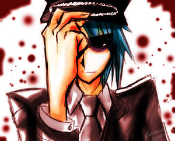

Forums galactiques > Taverne galactique : lieu de discussion informel > La Fabuleuse Histoire
| Alnia. Réputation à la taverne : 867  07/08 ETU 19:44  | Score : 0 Détails Le croiseur maudit est perdu dans la choucroute originelle qui sent les pieds comme ma stéréo malmenée a coup de batte comme Chevrozer.
Dommage que Thanatos ne soit malade, sinon... | ||
| emerion Réputation à la taverne : 11  07/08 ETU 19:46 | Score : 0 Détails Le croiseur maudit est perdu dans la choucroute originelle qui sent les pieds comme ma stéréo malmenée a coup de batte comme Chevrozer.
Dommage que Thanatos ne soit malade, sinon il aurait put... | ||
| Saiyen Réputation à la taverne : 105  07/08 ETU 20:24 | Score : 0 Détails "Le croiseur maudit est perdu dans la choucroute originelle qui sent les pieds comme ma stéréo malmenée a coup de batte comme Chevrozer.
Dommage que Thanatos ne soit malade, sinon il aurait put lui mettre.. | ||
| Melenda Otori Réputation à la taverne : 34  08/08 ETU 15:11 | Score : 0 Détails "Le croiseur maudit est perdu dans la choucroute originelle qui sent les pieds comme ma stéréo malmenée a coup de batte comme Chevrozer.
Dommage que Thanatos ne soit malade, sinon il aurait put lui mettre dans... | ||
| Lilao Galian Réputation à la taverne : 78  08/08 ETU 15:37 | Score : 0 Détails Le croiseur maudit est perdu dans la choucroute originelle qui sent les pieds comme ma stéréo malmenée a coup de batte comme Chevrozer.
Dommage que Thanatos ne soit malade, sinon il aurait put lui mettre dans l'idée de... | ||
| emerion Réputation à la taverne : 11 08/08 ETU 15:49 | Score : 0 Détails Le croiseur maudit est perdu dans la choucroute originelle qui sent les pieds comme ma stéréo malmenée a coup de batte comme Chevrozer.
Dommage que Thanatos ne soit malade, sinon il aurait put lui mettre dans l'idée de se rendre... | ||
| Lilao Galian Réputation à la taverne : 78 08/08 ETU 16:06 | Score : 0 Détails Le croiseur maudit est perdu dans la choucroute originelle qui sent les pieds comme ma stéréo malmenée a coup de batte comme Chevrozer.
Dommage que Thanatos ne soit malade, sinon il aurait put lui mettre dans l'idée de se rendre à la police galactique pour... | ||
| emerion Réputation à la taverne : 11 08/08 ETU 16:10 | Score : 0 Détails Le croiseur maudit est perdu dans la choucroute originelle qui sent les pieds comme ma stéréo malmenée a coup de batte comme Chevrozer.
Dommage que Thanatos ne soit malade, sinon il aurait put lui mettre dans l'idée de se rendre à la police galactique pour demander... | ||
| Saiyen Réputation à la taverne : 105 08/08 ETU 16:17 | Score : 0 Détails Le croiseur maudit est perdu dans la choucroute originelle qui sent les pieds comme ma stéréo malmenée a coup de batte comme Chevrozer.
Dommage que Thanatos ne soit malade, sinon il aurait put lui mettre dans l'idée de se rendre à la police galactique pour demander son chemin. | ||
| emerion Réputation à la taverne : 11 08/08 ETU 16:28 | Score : 0 Détails Le croiseur maudit est perdu dans la choucroute originelle qui sent les pieds comme ma stéréo malmenée a coup de batte comme Chevrozer.
Dommage que Thanatos ne soit malade, sinon il aurait put lui mettre dans l'idée de se rendre à la police galactique pour demander son chemin. Cependant... | ||
| Melenda Otori Réputation à la taverne : 34 08/08 ETU 19:20 | Score : 0 Détails "Le croiseur maudit est perdu dans la choucroute originelle qui sent les pieds comme ma stéréo malmenée a coup de batte comme Chevrozer.
Dommage que Thanatos ne soit malade, sinon il aurait put lui mettre dans l'idée de se rendre à la police galactique pour demander son chemin. Cependant il aurait... | ||
| emerion Réputation à la taverne : 11 08/08 ETU 19:33 | Score : 0 Détails "Le croiseur maudit est perdu dans la choucroute originelle qui sent les pieds comme ma stéréo malmenée a coup de batte comme Chevrozer.
Dommage que Thanatos ne soit malade, sinon il aurait put lui mettre dans l'idée de se rendre à la police galactique pour demander son chemin. Cependant il aurait dut savoir... | ||
| Georges Washington Réputation à la taverne : 3 08/08 ETU 19:35 | Score : 0 Détails "Le croiseur maudit est perdu dans la choucroute originelle qui sent les pieds comme ma stéréo malmenée a coup de batte comme Chevrozer.
Dommage que Thanatos ne soit malade, sinon il aurait put lui mettre dans l'idée de se rendre à la police galactique pour demander son chemin. Cependant il aurait dut savoir qu'il était ... | ||
| Melenda Otori Réputation à la taverne : 34 08/08 ETU 19:40 | Score : 0 Détails "Le croiseur maudit est perdu dans la choucroute originelle qui sent les pieds comme ma stéréo malmenée a coup de batte comme Chevrozer.
Dommage que Thanatos ne soit malade, sinon il aurait put lui mettre dans l'idée de se rendre à la police galactique pour demander son chemin. Cependant il aurait dut savoir qu'il était tard et que... | ||
| Framed Réputation à la taverne : 21  08/08 ETU 19:41 | Score : 0 Détails "Le croiseur maudit est perdu dans la choucroute originelle qui sent les pieds comme ma stéréo malmenée a coup de batte comme Chevrozer.
Dommage que Thanatos ne soit malade, sinon il aurait put lui mettre dans l'idée de se rendre à la police galactique pour demander son chemin. Cependant il aurait dut savoir qu'il était tard et qu'il devait aller chercher des... | ||
| emerion Réputation à la taverne : 11 08/08 ETU 19:41 | Score : 0 Détails
"Le croiseur maudit est perdu dans la choucroute originelle qui sent les pieds comme ma stéréo malmenée a coup de batte comme Chevrozer. Dommage que Thanatos ne soit malade, sinon il aurait put lui mettre dans l'idée de se rendre à la police galactique pour demander son chemin. Cependant il aurait dut savoir qu'il était tard et que les bar... | ||
| Lilao Galian Réputation à la taverne : 78 08/08 ETU 20:18 | Score : 0 Détails Le croiseur maudit est perdu dans la choucroute originelle qui sent les pieds comme ma stéréo malmenée a coup de batte comme Chevrozer.
Dommage que Thanatos ne soit malade, sinon il aurait put lui mettre dans l'idée de se rendre à la police galactique pour demander son chemin. Cependant il aurait dut savoir qu'il était tard et que les bars étaient fermés!... | ||
| emerion Réputation à la taverne : 11 08/08 ETU 21:09 | Score : 0 Détails Le croiseur maudit est perdu dans la choucroute originelle qui sent les pieds comme ma stéréo malmenée a coup de batte comme Chevrozer.
Dommage que Thanatos ne soit malade, sinon il aurait put lui mettre dans l'idée de se rendre à la police galactique pour demander son chemin. Cependant il aurait dut savoir qu'il était tard et que les bars étaient fermés! Mais... | ||
| Framed Réputation à la taverne : 21 09/08 ETU 10:07 | Score : 0 Détails Le croiseur maudit est perdu dans la choucroute originelle qui sent les pieds comme ma stéréo malmenée a coup de batte comme Chevrozer.
Dommage que Thanatos ne soit malade, sinon il aurait put lui mettre dans l'idée de se rendre à la police galactique pour demander son chemin. Cependant il aurait dut savoir qu'il était tard et que les bars étaient fermés! Mais il avait soif, très soif, alors... | ||
| Georges Washington Réputation à la taverne : 3 09/08 ETU 20:54 | Score : 0 Détails Le croiseur maudit est perdu dans la choucroute originelle qui sent les pieds comme ma stéréo malmenée a coup de batte comme Chevrozer.
Dommage que Thanatos ne soit malade, sinon il aurait put lui mettre dans l'idée de se rendre à la police galactique pour demander son chemin. Cependant il aurait dut savoir qu'il était tard et que les bars étaient fermés! Mais il avait soif, très soif, alors il entra dans une ... |
Forums galactiques > Taverne galactique : lieu de discussion informel > La Fabuleuse Histoire